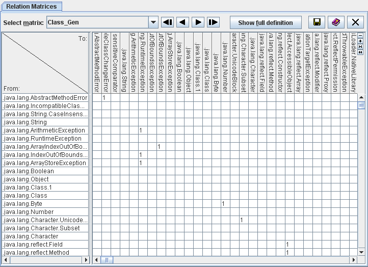

| Prev - Next - Down | SDMetrics - the UML design measurement tool |

Figure 17: Relation matrix
The rows of a relationship matrix show the source design elements from which the relationship originates, the columns contain the target design elements of the relation. The table cells indicate the presence or number of relationships between the respective source and target design element.
The dropdown list above the table shows the available relation matrices. Select the relation matrix for display from this list.
Relation matrices can become quite large. Use the vertical and horizontal scroll bars of the table to see more columns and rows, as needed. The left hand column showing the source element names always remains visible. To adjust its width, drag the separator bar between the two table sides to a suitable position. The column header shows the names of the target elements. To increase or decrease the height of the column header, use the and buttons in the upper right corner of the table. You can adjust the width of the table columns with the and buttons.
The "Show full definition" button above the matrix opens the measurement catalog with a detailed definition of the currently selected matrix (see Section 4.13 "The View 'Catalog'").
Appendix D: "List of Matrices" describes the relation matrices that SDMetrics calculates. Note that the relation matrices view will only show relation matrices that are not empty. A matrix is empty if
You can define and display additional relation matrices of your own, the procedure is described in Section 8.4 "Definition of Relation Matrices".
| Prev | Up | Next |
| Section 4.9.5 "Exporting Metric Deltas" | Contents | Section 4.11 "The View 'Graph Structures'" |